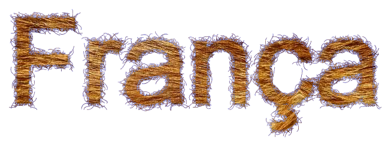
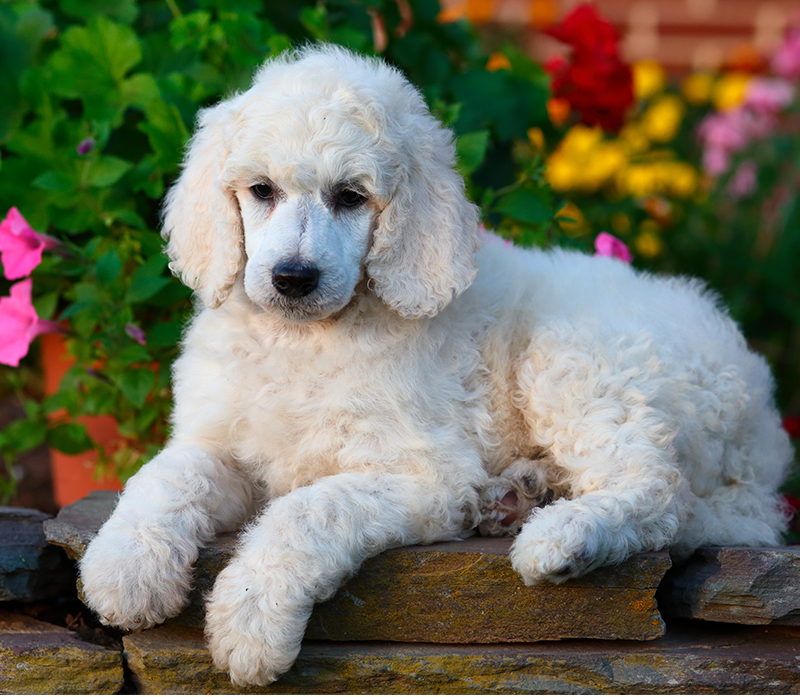
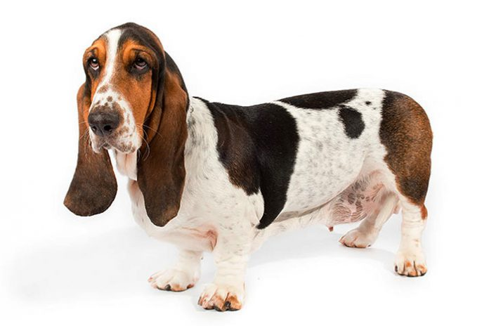
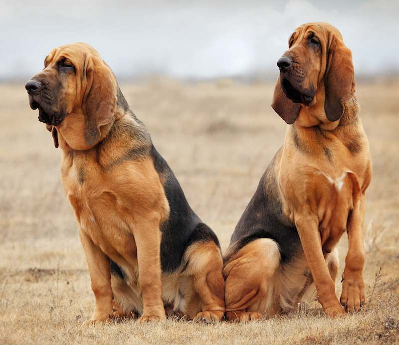

Poodle
A palavra poodle vem da palavra pfudel, que em alemão significa “poça” ou “para espirrar,” provavelmente referindo-se à afinidade do cão com a água. Com uma lealdade e fidelidade infalível com os seus donos, o Poodle adora agradá-los, ele adapta-se facilmente em todos os ambientes, em particular à vida na cidade. A raça Poodle possui uma variedade incrível de cores (branco, preto, castanho e cinza) e tamanhos (grandes, médios e anão), sem dúvida fazendo dela uma das mais diversas raças no mundo canino.
| Expectativa de Vida | Altura | Peso | |
|---|---|---|---|
| Mínimo | 14 Anos | 25 cm | 2 kg |
| Máximo | 18 Anos | 60 cm | 23 kg |
Basset Hound
Basset Hounds foram os primeiros cães mais populares na aristocracia francesa, mas após a Revolução Francesa eles tornaram-se os cães de caça dos plebeus porque não tinham condições financeiras para manter cavalos, precisavam de um cão que podesse segui-los a pé. Bassets são cães farejadores, o que significa que foram criados para caçar seguindo o cheiro de suas presas. Seu olfato é fenomenal e está em segundo lugar ficando apenas atrás somente da raça bloodhound.
| Expectativa de Vida | Altura | Peso | |
|---|---|---|---|
| Mínimo | 12 Anos | 33 cm | 22 kg |
| Máximo | 15 Anos | 38 cm | 29 kg |
Bloodhound
Bloodhound é uma raça de grande porte usada para seguir o rasto de animais que são frequentemente caçados. Este cão é muito ativo e inteligente cujo sentido de olfato fez com que este tivesse um lugar especial como cão da policia e de busca e salvamento. É amado pela sua natureza doce e aparência única. Este cão enrugado é gentil e carinhoso, mas ele está longe de ser preguiçoso. O bloodhound é um cão que necessita de longas caminhadas diárias.
| Expectativa de Vida | Altura | Peso | |
|---|---|---|---|
| Mínimo | 11 Anos | 60 cm | 40 kg |
| Máximo | 15 Anos | 67 cm | 48 kg |
Papillon

Encontram-se as origens deste Spaniel já no século XIV, nas Flandres. Nos séculos XVI e XVII, este pequeno cão de orelhas trémulas semelhantes a asas de borboleta, que por essa razão se chama Papillon(borboleta em francês) era hóspede familiar das cortes reais e dos salões da aristocracia. Este cão é ativo, alegre, afetuoso e muito sensível, mas também muito apegado aos donos, gosta de receber carinho. O Papillon é extrovertido e enérgico e também gosta de estar com as pessoas.
| Expectativa de Vida | Altura | Peso | |
|---|---|---|---|
| Mínimo | 12 Anos | 27 cm | 2 kg |
| Máximo | 17 Anos | 28cm | 5 kg |